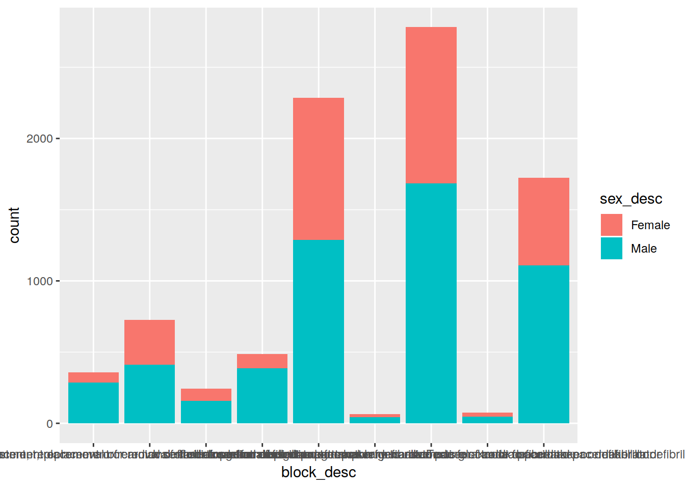
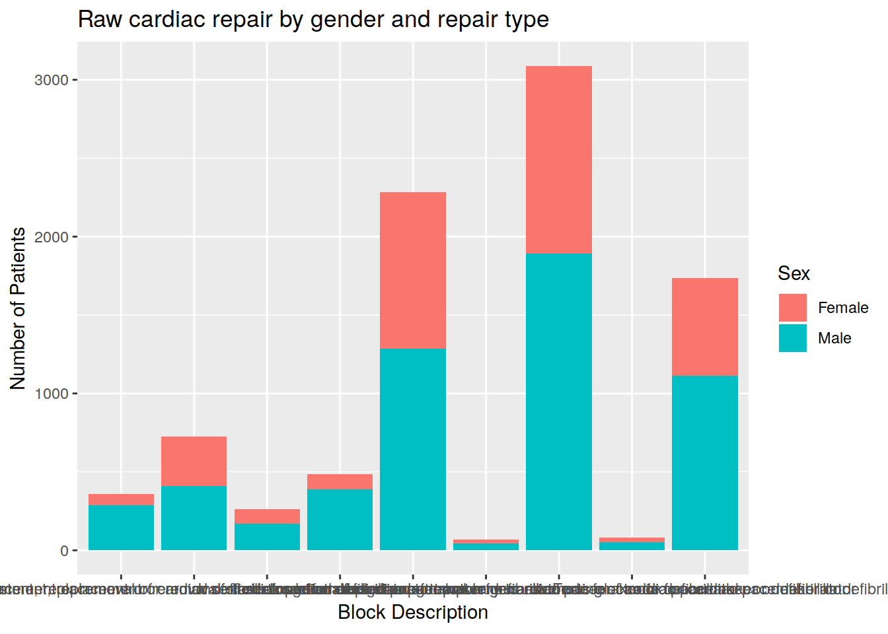
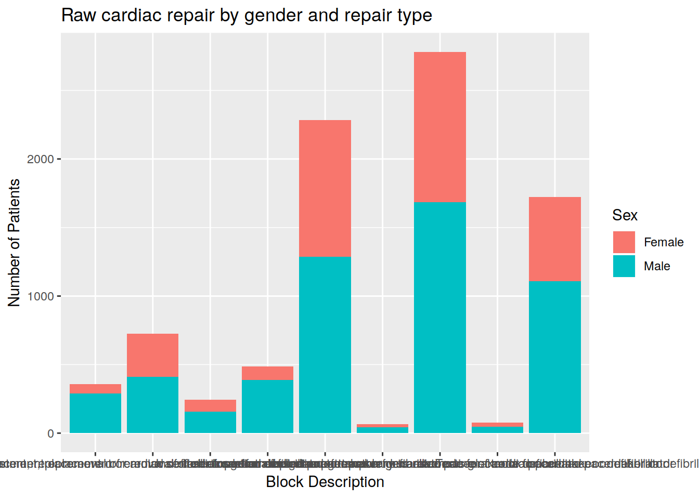

Last updated: 2019-05-15
workflowr checks: (Click a bullet for more information) ✔ R Markdown file: up-to-date
Great! Since the R Markdown file has been committed to the Git repository, you know the exact version of the code that produced these results.
✔ Environment: empty
Great job! The global environment was empty. Objects defined in the global environment can affect the analysis in your R Markdown file in unknown ways. For reproduciblity it’s best to always run the code in an empty environment.
✔ Seed:
set.seed(20190513)
The command set.seed(20190513) was run prior to running the code in the R Markdown file. Setting a seed ensures that any results that rely on randomness, e.g. subsampling or permutations, are reproducible.
✔ Session information: recorded
Great job! Recording the operating system, R version, and package versions is critical for reproducibility.
✔ Repository version: 04acb0e
wflow_publish or wflow_git_commit). workflowr only checks the R Markdown file, but you know if there are other scripts or data files that it depends on. Below is the status of the Git repository when the results were generated:
working directory clean
| File | Version | Author | Date | Message |
|---|---|---|---|---|
| Rmd | 04acb0e | Dennis Wollersheim | 2019-05-15 | wflow_publish(“analysis/tutorial2.Rmd”) |
| html | fa8c396 | Dennis Wollersheim | 2019-05-15 | Build site. |
| Rmd | 96b442e | Dennis Wollersheim | 2019-05-15 | wflow_publish(“analysis/tutorial2.Rmd”) |
| Rmd | 91affaf | Dennis Wollersheim | 2019-05-13 | finished first tutorial |
| html | 91affaf | Dennis Wollersheim | 2019-05-13 | finished first tutorial |
Last week, we typed all our commands directly into the console window. THis is useful for testing and small projects, but it is much better to capture our command in a file, so we can control them.
Rstudio has a file editor built directly into the environment. Create a new R Script file by going to File -> New File -> R Script (or just type ctrl-shift-N)
New File Menu
| Version | Author | Date |
|---|---|---|
| 04acb0e | Dennis Wollersheim | 2019-05-15 |
A blank R Script editing window pops up in the top left quadrant. You can type your commands in here, and send them to the console window by pressing ctrl-enter. As in pgadmin, you can also highlight a section of the line, and run it by pressing ctrl-enter.
Blank R script window
| Version | Author | Date |
|---|---|---|
| 04acb0e | Dennis Wollersheim | 2019-05-15 |
Now, running commands in RStudio is a two step process. First type the commands into the upper script window, and press ctrl-enter to run them in the console window, below. Like last week, type library(tidyverse) into the rscript window, and press ctrl-enter. It is conventional to load all your libraries at the start of the script.
Notice the informational messages that now show up in the console window, below.
2_load_tidyverse.jpg
| Version | Author | Date |
|---|---|---|
| 04acb0e | Dennis Wollersheim | 2019-05-15 |
It is also often useful to view your data. View the mpg dataset. Note how it shows up in the console window, below.
3_view_mpg.jpg
| Version | Author | Date |
|---|---|---|
| 04acb0e | Dennis Wollersheim | 2019-05-15 |
When you generate a graphic, like last week, it shows up in the bottom right quadrant
ggplot(data = mpg) +
geom_point(mapping = aes(x = displ, y = hwy))4_plot_mpg.jpg
| Version | Author | Date |
|---|---|---|
| 04acb0e | Dennis Wollersheim | 2019-05-15 |
At some point it is useful to save your file. I named my file vaed_explore.R, by going to File -> Save as -> vaed_explore.R
You can see vaed_explore.R in the bottom right Files quadrant. If you want to download files from the server, select them using left hand tick box, then File -> More -> Export.
We will now work with health data. The following two queries select the same data we used in the second tableau tutorial.
select diag_code, admission_id, age_years, los, sameday_id, drg, sex_desc, diag_short_desc, sep_mode_desc, care_type_desc
from admission JOIN sex using (sex_id)
join admission_diagnosis using (admission_id)
join diagnosis_desc using (diag_code)
JOIN separation_mode USING (sep_mode_id)
JOIN care_type USING (care_type_id)
WHERE diag_code between 'I21' AND 'I2399';
select procedure_code, admission_id, age_years, los, sameday_id, drg, sex_desc, procedure_short_desc, block_desc, sep_mode_desc, care_type_desc
from admission JOIN sex using (sex_id)
join admission_procedure using (admission_id)
join procedure_desc using (procedure_code)
join block using (block)
JOIN separation_mode USING (sep_mode_id)
JOIN care_type USING (care_type_id)
WHERE block_desc like '%cardiac%'
AND bnt to come downlock_desc not like 'Closure%'
AND block_desc not like '%catheter%'
AND block_desc not like 'Gated%'
I downloaded the data from the above queries from pgadmin, using F8 to export it as csv, so you do not need to do this. Download cardiac.zip to your desktop. It contains these two datasets as csv files, cardiac_diagnosis.csv and cardiac_procedures.csv.
We will upload the cardiac datafiles to Rstudio, by using the Files-> Upload, found in Files tab of the bottom right quadrant.
Files tab
| Version | Author | Date |
|---|---|---|
| 04acb0e | Dennis Wollersheim | 2019-05-15 |
Upload file selection box
| Version | Author | Date |
|---|---|---|
| 04acb0e | Dennis Wollersheim | 2019-05-15 |
Rstudio has unzipped the files for you. You can now see the uploaded cardiac files in the Files tab.
Uploaded files complete
| Version | Author | Date |
|---|---|---|
| 04acb0e | Dennis Wollersheim | 2019-05-15 |
The best way to read CSV files into R is by using the read_csv function. This is part of the readr package, already loaded in as part of the tidyverse. Type the following code into your Rscript file, and press Ctrl-enter.
read_csv("cardiac_procedures.csv")Parsed with column specification:
cols(
procedure_code = col_double(),
admission_id = col_double(),
age_years = col_double(),
los = col_double(),
sameday_id = col_character(),
drg = col_character(),
sex_desc = col_character(),
procedure_short_desc = col_character(),
block_desc = col_character(),
sep_mode_desc = col_character(),
care_type_desc = col_character()
)# A tibble: 9,087 x 11
procedure_code admission_id age_years los sameday_id drg sex_desc
<dbl> <dbl> <dbl> <dbl> <chr> <chr> <chr>
1 3825600 21019781 62 11 N F40A Male
2 3825600 21159692 80 2 N F17A Female
3 3825600 21356305 83 4 N F12B Female
4 3825600 21380943 69 15 N F09A Male
5 3825600 21389939 69 32 N A06B Male
6 3825600 21513018 77 7 N F12A Male
7 3825600 21532997 77 15 N F03A Male
8 3825600 21602667 58 1 Y F41A Male
9 3825600 21631075 90 7 N F10B Male
10 3825600 21814103 79 5 N F17A Male
# … with 9,077 more rows, and 4 more variables:
# procedure_short_desc <chr>, block_desc <chr>, sep_mode_desc <chr>,
# care_type_desc <chr>While we could do so, it is inefficient to read the data in from the original CSV file every time we use it. Instead, we will read it into a tibble, a structure in the R environment that we can use repeatedly.
cardiac_procedures <- read_csv("cardiac_procedures.csv") Parsed with column specification:
cols(
procedure_code = col_double(),
admission_id = col_double(),
age_years = col_double(),
los = col_double(),
sameday_id = col_character(),
drg = col_character(),
sex_desc = col_character(),
procedure_short_desc = col_character(),
block_desc = col_character(),
sep_mode_desc = col_character(),
care_type_desc = col_character()
)Read in the cardiac_diagnosis.csv file. What fields are in it?
Read the cardiac_diagnosis.csv file into the cardiac_diagnosis tibble
The best thing about R, and language in general, is that you can build up meaningful phrases based on relatively simple fragments. For example, ggplot produces many different graphs by combining two types of chunks, ggplot and geom_ functions, joining the chunks of the phrase using the plus sign + .
When we combine data phrases, we call it a data pipeline, and we join them using the pipe symbol, %>% .
For example, the following command finds all the distinct block descriptions in the cardiac procedures dataset.
cardiac_procedures %>%
distinct( block_desc )# A tibble: 9 x 1
block_desc
<chr>
1 Insertion of temporary transvenous electrode for cardiac pacemaker or de…
2 Insertion of permanent transvenous electrode for cardiac pacemaker or de…
3 Insertion of other electrode or patch for cardiac pacemaker or defibrill…
4 Insertion of cardiac pacemaker generator
5 Insertion of cardiac defibrillator generator
6 Adjustment, replacement or removal of electrode for cardiac pacemaker or…
7 Adjustment, replacement or removal of cardiac pacemaker generator
8 Adjustment, replacement or removal of cardiac defibrillator generator
9 Testing of cardiac pacemaker or defibrillator select and filter functionsThere are a wide variety of functions you can use in a pipe. Some useful ones that you will recognise are select and filter. Let’s explore them!
cardiac_procedures %>%
select( drg, sex_desc )# A tibble: 9,087 x 2
drg sex_desc
<chr> <chr>
1 F40A Male
2 F17A Female
3 F12B Female
4 F09A Male
5 A06B Male
6 F12A Male
7 F03A Male
8 F41A Male
9 F10B Male
10 F17A Male
# … with 9,077 more rowscardiac_procedures %>%
filter( sex_desc == 'Female')# A tibble: 3,445 x 11
procedure_code admission_id age_years los sameday_id drg sex_desc
<dbl> <dbl> <dbl> <dbl> <chr> <chr> <chr>
1 3825600 21159692 80 2 N F17A Female
2 3825600 21356305 83 4 N F12B Female
3 3825600 21881322 76 21 N F01A Female
4 3825600 22293633 79 1 N F15B Female
5 3825600 22318182 77 1 N F15B Female
6 3825601 21077136 79 4 N F76A Female
7 3825601 21088080 73 6 N F12A Female
8 3825601 21145398 73 9 N F12A Female
9 3825601 21154733 14 7 N F17A Female
10 3825601 21159692 80 2 N F17A Female
# … with 3,435 more rows, and 4 more variables:
# procedure_short_desc <chr>, block_desc <chr>, sep_mode_desc <chr>,
# care_type_desc <chr>How would you select only the diagnosis descriptions?
How would you see the ages and lengths of stay of men who had a cardiac procedure?
How many different seperation modes are there? How many drg’s?
count and head functionsThe count function is a two step function. It groups all unique values together (like distinct), summarising the result by counting. The equivalent in SQL would be COUNT(*) and GROUP BY.
cardiac_procedures %>%
count( procedure_short_desc )# A tibble: 51 x 2
procedure_short_desc n
<chr> <int>
1 Adjust cardiac defibrillator generator 15
2 Adjust epicardial elec card pacemaker 3
3 Adjust L ventrl elec defib thmy stmy sbx 1
4 Adjust trnsven elec card defibrillator 17
5 Adjust trnsven elec for card pacemaker 51
6 Adjust ventrl elec pcmkr thmy stmy sbx 2
7 Adjustment cardiac pacemaker generator 14
8 Ins of patches for cardiac defibrillator 2
9 Ins perm epicardial elec pcmkr sbx appr 1
10 Ins perm epicardl elec defib stmy thmy 8
# … with 41 more rowsIf we add sort = TRUE to count, the results are sorted in descending order.
cardiac_procedures %>%
count( procedure_short_desc, sort = TRUE )# A tibble: 51 x 2
procedure_short_desc n
<chr> <int>
1 Ins perm trnsven elec oth cham pcmkr 2346
2 Insertion of cardiac pacemaker generator 2285
3 Testing of other cardiac pacemaker 1118
4 Replacement cardiac pacemaker generator 664
5 Ins perm trnsven elec oth cham defib 490
6 Insertion of cardiac defib generator 485
7 Testing of cardiac defibrillator 428
8 Replace cardiac defibrillator generator 322
9 Test A-V seqtl rate respn / antchy pcmkr 190
10 Ins perm trnsven elec L ventrl pcmkr 128
# … with 41 more rowsIf we add the head(5) function to the end of the pipe, we get the top 5 procedures. Our phrases are getting longer!
cardiac_procedures %>%
count( procedure_short_desc, sort = TRUE ) %>%
head( 5 )# A tibble: 5 x 2
procedure_short_desc n
<chr> <int>
1 Ins perm trnsven elec oth cham pcmkr 2346
2 Insertion of cardiac pacemaker generator 2285
3 Testing of other cardiac pacemaker 1118
4 Replacement cardiac pacemaker generator 664
5 Ins perm trnsven elec oth cham defib 490What is the most prevalent cardiac block? Most prevalent los? drg?
Show only the ages and lengths of stay of men who had cardiac procedures.
How many different seperation modes are there? How many drg’s?
Create another tibble called top 5 diagnosis, containing the top 5 diagnosis codes
You can also plot directly from a pipe. Lets compare the number of men and women who had cardiac procedures. Note, I select out distinct admissions so that we don’t double count admissions that had more than one procedure.
cardiac_procedures %>%
distinct( admission_id, sex_desc, block_desc ) %>%
ggplot() +
geom_bar(mapping = aes(x = block_desc, fill=sex_desc)) 
| Version | Author | Date |
|---|---|---|
| 91affaf | Dennis Wollersheim | 2019-05-13 |
The graph need better titles. Here, I modify the title, x and y labels and legend label.
cardiac_procedures %>%
distinct( admission_id, sex_desc, block_desc ) %>%
ggplot() +
geom_bar(mapping = aes(x = block_desc, fill=sex_desc)) +
ggtitle( 'Raw cardiac repair by gender and repair type') +
ylab('Number of Patients') +
xlab('Block Description') +
scale_fill_discrete(name = 'Sex' )
Pretty well anything you want to do in R, someone else has wanted to do it previously.
I noted that the text on the x axis was too long, and after a few tries, I came up the the google search ‘how to wrap text on x axis ggplot’. The Stack Overflow site suggested using the scales package. After a few tries to get find the appropriate number of characters to wrap at, I came up with the following.
library(scales)
cardiac_procedures %>%
distinct( admission_id, sex_desc, block_desc ) %>%
ggplot() +
geom_bar(mapping = aes(x = block_desc, fill=sex_desc)) +
ggtitle( 'Raw cardiac repair by gender and repair type') +
ylab('Number of Patients') +
xlab('Block Description') +
scale_fill_discrete(name = 'Sex' ) +
scale_x_discrete(labels = wrap_format(40)) +
coord_flip()
| Version | Author | Date |
|---|---|---|
| fa8c396 | Dennis Wollersheim | 2019-05-15 |
| 91affaf | Dennis Wollersheim | 2019-05-13 |
Create a plot comparing the number of people in each of the different seperation modes
Do the same as above, but for only men
For the most frequent care type, what is the gender breakdown of patients?
sessionInfo()R version 3.4.4 (2018-03-15)
Platform: x86_64-pc-linux-gnu (64-bit)
Running under: Ubuntu 18.04.2 LTS
Matrix products: default
BLAS: /usr/lib/x86_64-linux-gnu/openblas/libblas.so.3
LAPACK: /usr/lib/x86_64-linux-gnu/libopenblasp-r0.2.20.so
locale:
[1] LC_CTYPE=en_AU.UTF-8 LC_NUMERIC=C
[3] LC_TIME=en_AU.UTF-8 LC_COLLATE=en_AU.UTF-8
[5] LC_MONETARY=en_AU.UTF-8 LC_MESSAGES=en_AU.UTF-8
[7] LC_PAPER=en_AU.UTF-8 LC_NAME=C
[9] LC_ADDRESS=C LC_TELEPHONE=C
[11] LC_MEASUREMENT=en_AU.UTF-8 LC_IDENTIFICATION=C
attached base packages:
[1] stats graphics grDevices utils datasets methods base
other attached packages:
[1] scales_1.0.0 forcats_0.4.0 stringr_1.4.0 dplyr_0.8.0.1
[5] purrr_0.3.2 readr_1.3.1 tidyr_0.8.3 tibble_2.1.1
[9] ggplot2_3.1.1 tidyverse_1.2.1 nvimcom_0.9-82
loaded via a namespace (and not attached):
[1] tidyselect_0.2.5 xfun_0.6 haven_2.1.0
[4] lattice_0.20-35 colorspace_1.4-1 generics_0.0.2
[7] htmltools_0.3.6 yaml_2.2.0 utf8_1.1.4
[10] rlang_0.3.4 R.oo_1.22.0 pillar_1.3.1
[13] withr_2.1.2 glue_1.3.1 R.utils_2.7.0
[16] modelr_0.1.4 readxl_1.3.1 plyr_1.8.4
[19] munsell_0.5.0 gtable_0.3.0 workflowr_1.1.1
[22] cellranger_1.1.0 rvest_0.3.3 R.methodsS3_1.7.1
[25] evaluate_0.13 labeling_0.3 knitr_1.22
[28] fansi_0.4.0 highr_0.8 broom_0.5.2
[31] Rcpp_1.0.1 backports_1.1.4 jsonlite_1.6
[34] hms_0.4.2 digest_0.6.18 stringi_1.4.3
[37] grid_3.4.4 rprojroot_1.3-2 cli_1.1.0
[40] tools_3.4.4 magrittr_1.5 lazyeval_0.2.2
[43] crayon_1.3.4 whisker_0.3-2 pkgconfig_2.0.2
[46] xml2_1.2.0 lubridate_1.7.4 assertthat_0.2.1
[49] rmarkdown_1.11 httr_1.4.0 rstudioapi_0.10
[52] R6_2.4.0 nlme_3.1-137 git2r_0.24.0
[55] compiler_3.4.4 This reproducible R Markdown analysis was created with workflowr 1.1.1